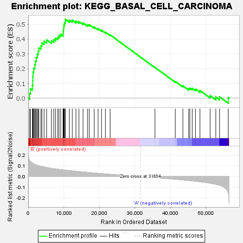
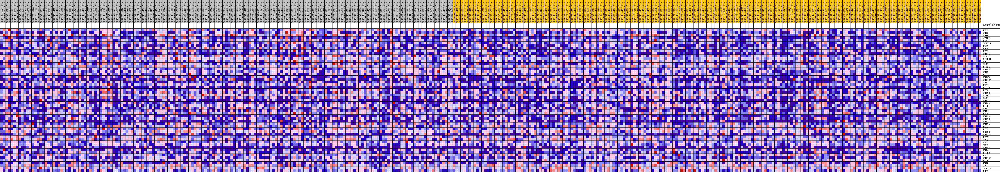
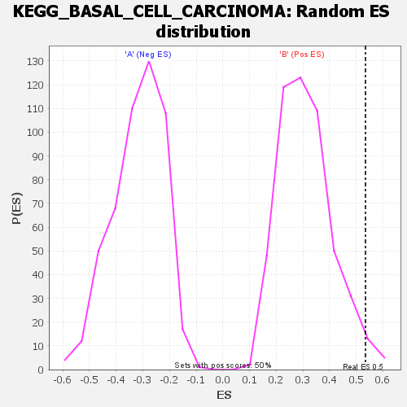

| | | Dataset | my.my.cls#B_versus_A.my.cls#B_versus_A_repos |
| Phenotype | my.cls#B_versus_A_repos |
| Upregulated in class | B |
| GeneSet | KEGG_BASAL_CELL_CARCINOMA |
| Enrichment Score (ES) | 0.5344019 |
| Normalized Enrichment Score (NES) | 1.7200419 |
| Nominal p-value | 0.022 |
| FDR q-value | 1.0 |
| FWER p-Value | 0.435 |
Table: GSEA Results Summary

Fig 1: Enrichment plot: KEGG_BASAL_CELL_CARCINOMA
Profile of the Running ES Score & Positions of GeneSet Members on the Rank Ordered List
| SYMBOL | TITLE | RANK IN GENE LIST | RANK METRIC SCORE | RUNNING ES | CORE ENRICHMENT | | 1 | DVL3 | na | 409 | 0.150 | 0.0310 | Yes |
| 2 | WNT6 | na | 605 | 0.142 | 0.0637 | Yes |
| 3 | SUFU | na | 1182 | 0.125 | 0.0855 | Yes |
| 4 | AXIN2 | na | 1293 | 0.123 | 0.1150 | Yes |
| 5 | LEF1 | na | 1311 | 0.123 | 0.1460 | Yes |
| 6 | TCF7L1 | na | 1370 | 0.122 | 0.1761 | Yes |
| 7 | FZD9 | na | 1579 | 0.118 | 0.2025 | Yes |
| 8 | BMP4 | na | 1865 | 0.113 | 0.2264 | Yes |
| 9 | FZD2 | na | 2023 | 0.111 | 0.2520 | Yes |
| 10 | WNT16 | na | 2276 | 0.108 | 0.2751 | Yes |
| 11 | GLI2 | na | 2537 | 0.105 | 0.2973 | Yes |
| 12 | CTNNB1 | na | 2807 | 0.102 | 0.3187 | Yes |
| 13 | SMO | na | 3006 | 0.101 | 0.3408 | Yes |
| 14 | GLI3 | na | 3589 | 0.096 | 0.3549 | Yes |
| 15 | STK36 | na | 3868 | 0.093 | 0.3738 | Yes |
| 16 | WNT5B | na | 4481 | 0.089 | 0.3857 | Yes |
| 17 | WNT3 | na | 5196 | 0.084 | 0.3946 | Yes |
| 18 | FZD7 | na | 6543 | 0.077 | 0.3905 | Yes |
| 19 | WNT8B | na | 7223 | 0.074 | 0.3973 | Yes |
| 20 | WNT10A | na | 7720 | 0.071 | 0.4067 | Yes |
| 21 | SHH | na | 8332 | 0.069 | 0.4135 | Yes |
| 22 | FZD1 | na | 8673 | 0.067 | 0.4246 | Yes |
| 23 | FZD10 | na | 9168 | 0.065 | 0.4325 | Yes |
| 24 | FZD8 | na | 9840 | 0.062 | 0.4365 | Yes |
| 25 | WNT9B | na | 9854 | 0.062 | 0.4522 | Yes |
| 26 | AXIN1 | na | 9958 | 0.062 | 0.4662 | Yes |
| 27 | GLI1 | na | 10022 | 0.062 | 0.4808 | Yes |
| 28 | WNT7A | na | 10060 | 0.062 | 0.4958 | Yes |
| 29 | WNT9A | na | 10211 | 0.061 | 0.5087 | Yes |
| 30 | PTCH1 | na | 10446 | 0.060 | 0.5199 | Yes |
| 31 | WNT2 | na | 10489 | 0.060 | 0.5344 | Yes |
| 32 | WNT1 | na | 11589 | 0.056 | 0.5292 | No |
| 33 | DVL2 | na | 12434 | 0.053 | 0.5277 | No |
| 34 | WNT3A | na | 13455 | 0.049 | 0.5222 | No |
| 35 | WNT2B | na | 14298 | 0.046 | 0.5191 | No |
| 36 | WNT11 | na | 15455 | 0.043 | 0.5095 | No |
| 37 | WNT5A | na | 16716 | 0.039 | 0.4971 | No |
| 38 | FZD3 | na | 17202 | 0.037 | 0.4980 | No |
| 39 | FZD4 | na | 18610 | 0.033 | 0.4817 | No |
| 40 | GSK3B | na | 19705 | 0.030 | 0.4701 | No |
| 41 | WNT7B | na | 20664 | 0.028 | 0.4602 | No |
| 42 | FZD5 | na | 21774 | 0.025 | 0.4469 | No |
| 43 | TP53 | na | 23100 | 0.021 | 0.4290 | No |
| 44 | APC2 | na | 35728 | -0.010 | 0.2083 | No |
| 45 | TCF7 | na | 41455 | -0.025 | 0.1135 | No |
| 46 | WNT8A | na | 43609 | -0.032 | 0.0836 | No |
| 47 | WNT4 | na | 45218 | -0.037 | 0.0645 | No |
| 48 | PTCH2 | na | 45568 | -0.038 | 0.0680 | No |
| 49 | DVL1 | na | 46236 | -0.040 | 0.0666 | No |
| 50 | WNT10B | na | 47157 | -0.044 | 0.0614 | No |
| 51 | FZD6 | na | 48406 | -0.048 | 0.0517 | No |
| 52 | HHIP | na | 51282 | -0.062 | 0.0167 | No |
| 53 | APC | na | 52881 | -0.072 | 0.0069 | No |
| 54 | TCF7L2 | na | 53938 | -0.082 | 0.0090 | No |
| 55 | BMP2 | na | 56393 | -0.151 | 0.0040 | No |
Table: GSEA details [plain text format]

Fig 2: KEGG_BASAL_CELL_CARCINOMA
Blue-Pink O' Gram in the Space of the Analyzed GeneSet

Fig 3: KEGG_BASAL_CELL_CARCINOMA: Random ES distribution
Gene set null distribution of ES for KEGG_BASAL_CELL_CARCINOMA